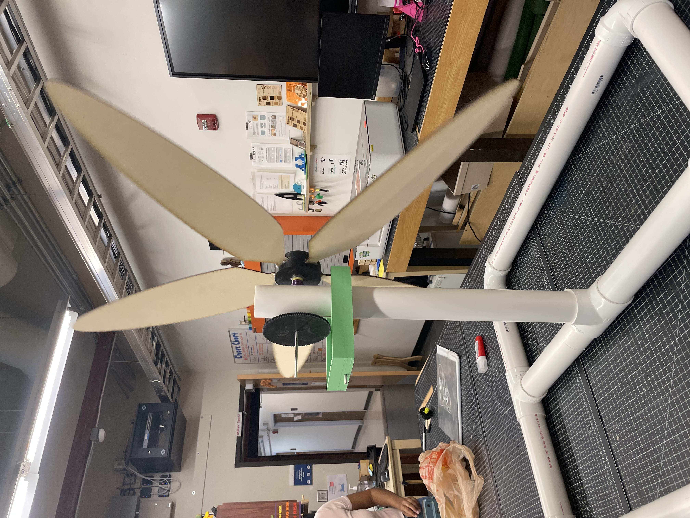

NSBE Jr. · KidWind Open Division · March 2025
💨NCSSM SmathForce · 1st Place National Champion · International Qualifier
Wind turbines are a crucial source of renewable energy, harnessing the power of wind to generate electricity efficiently. As team lead for NCSSM SmathForce, I directed our team through an extensive engineering design process — from blade concept to national championship.
The project involved exploring different blade designs, studying wind turbine physics, iterating through multiple prototypes with varying blade geometries and gear ratios, and optimizing turbine generation in balance with torque and RPM.

Explored different blade designs and studied wind turbine vocabulary, physics, and existing competition results. Sought guidance from NCSSM engineering instructors.
Utilized the school's fabrication lab extensively. Broke down complex engineering challenges into manageable subsystems. Iterated through multiple prototypes with varying blade designs, gear ratios, and generators.
Optimized turbine generation in cohesion with torque and RPM targets. Used LoggerPro video analysis to calculate RPM and Vernier Graphical Analysis to measure voltage output.
Finalized modular PVC-pipe base, 3D-printed gearbox, laser-cut blades, and 3V–12V DC motor generator. Designed for 48×48 in wind tunnel constraints and easy transport.
Gradual width increase from base to tip. Prioritized higher RPM output. Laser-cut from draftboard material.
Wide and curved, resembling a leaf. Prioritized torque over RPM. Ultimately produced best voltage output (2.5V with Design 1 wings, 0.52W).
5 blades at ~17 inches each to maximize swept area. 15° pitch built into the fabricated nose piece. Moment of inertia considered to balance torque and RPM targets.
Initial generators failed — they couldn't handle the torque and RPM profile of the turbine. After calculating blade angular velocity (ω = 1.735 rev/s, RPM = 104.1 at 3.5 m/s), the team selected a 3V–12V DC motor matched to the following criteria:
Best result: 2.5V at 12Ω resistance with Design 1 blades → 0.52 watts at 83.33% electrical efficiency. Voltage measured using Vernier Graphical Analysis; RPM calculated via LoggerPro video tracking.
| Item | Qty | Source | Price |
|---|---|---|---|
| Large Axles | 1 | Amazon | $9.99 |
| Bearings | 1 | Amazon | $8.06 |
| 10 ft PVC Pipe (Base) | 1 | Home Depot | $17.74 |
| 2 ft PVC Pipe (Shaft) | 2 | Home Depot | $15.92 |
| PVC Elbow Connectors | 4 | Home Depot | $12.84 |
| PVC Tee Connectors | 3 | Home Depot | $14.85 |
| Motor (6-pack) | 1 | Amazon | $10.59 |
| 3D Printed Parts (Gears, Box, Spacers, Fastener) | — | Fabrication Lab | $4.05 |
| Total | $94.04 |
Full slide deck with CAD renders, blade design progression, RPM data, and voltage graphs available in the competition presentation PDF.